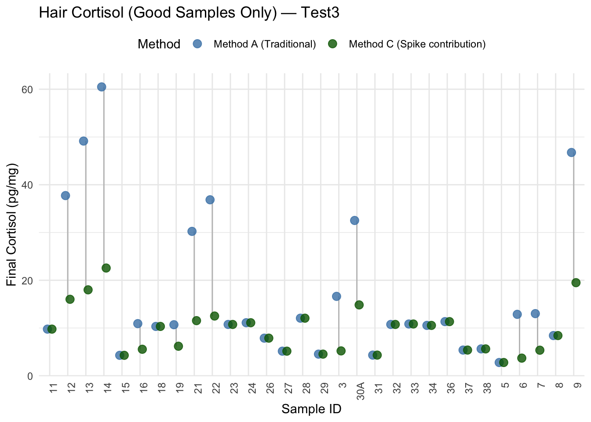
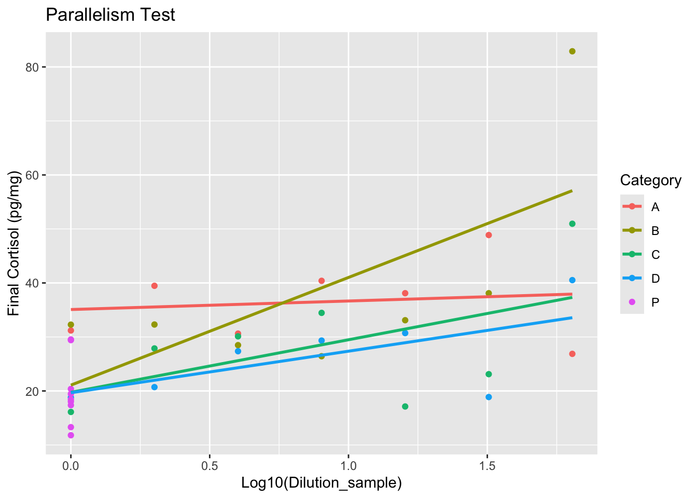
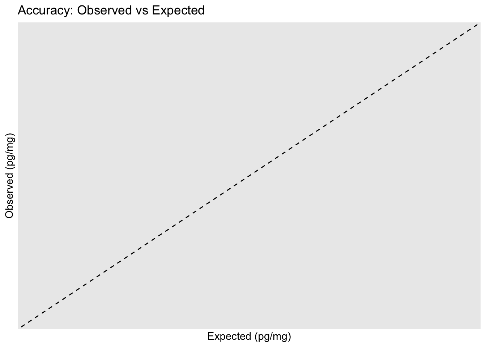
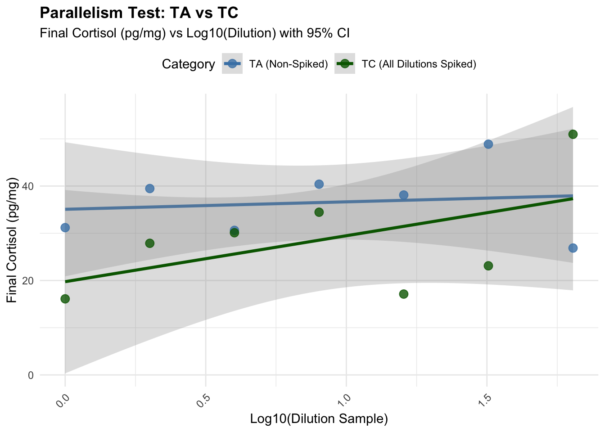
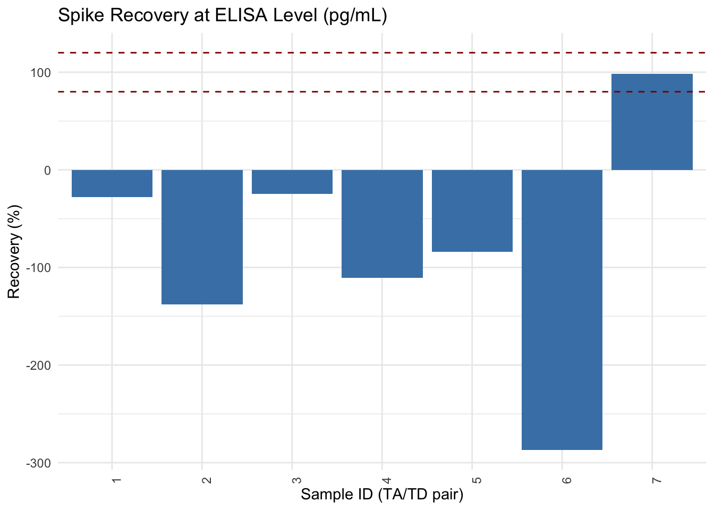
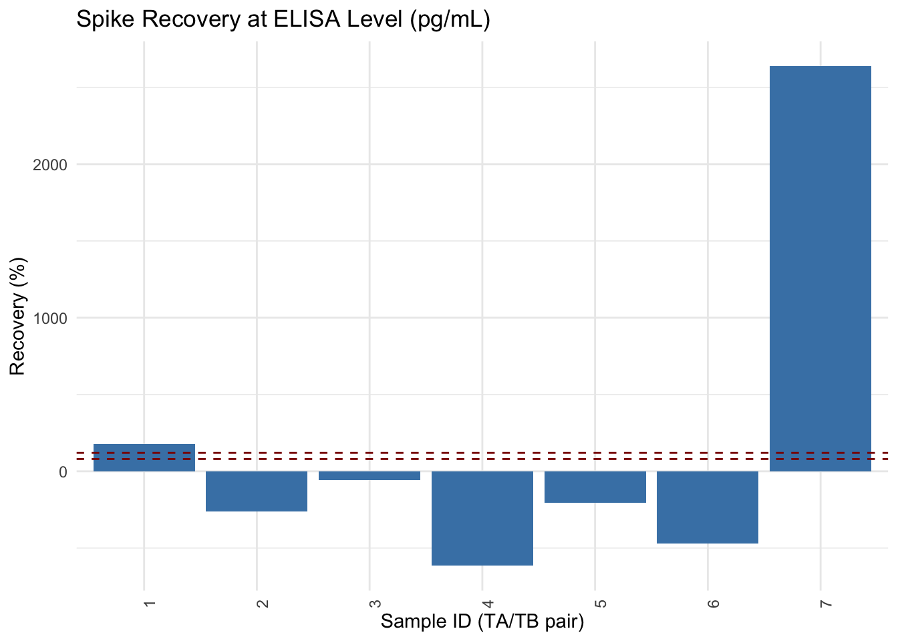
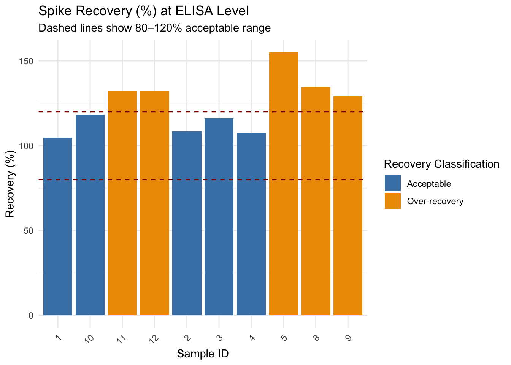

Comparing calculation methods, test3 and test4
2025-04-08
Last updated: 2025-04-11
Checks: 6 1
Knit directory:
HairCort-Evaluation-Nist2020/
This reproducible R Markdown analysis was created with workflowr (version 1.7.1). The Checks tab describes the reproducibility checks that were applied when the results were created. The Past versions tab lists the development history.
The R Markdown file has unstaged changes. To know which version of
the R Markdown file created these results, you’ll want to first commit
it to the Git repo. If you’re still working on the analysis, you can
ignore this warning. When you’re finished, you can run
wflow_publish to commit the R Markdown file and build the
HTML.
Great job! The global environment was empty. Objects defined in the global environment can affect the analysis in your R Markdown file in unknown ways. For reproduciblity it’s best to always run the code in an empty environment.
The command set.seed(20241016) was run prior to running
the code in the R Markdown file. Setting a seed ensures that any results
that rely on randomness, e.g. subsampling or permutations, are
reproducible.
Great job! Recording the operating system, R version, and package versions is critical for reproducibility.
Nice! There were no cached chunks for this analysis, so you can be confident that you successfully produced the results during this run.
Great job! Using relative paths to the files within your workflowr project makes it easier to run your code on other machines.
Great! You are using Git for version control. Tracking code development and connecting the code version to the results is critical for reproducibility.
The results in this page were generated with repository version 16ce91c. See the Past versions tab to see a history of the changes made to the R Markdown and HTML files.
Note that you need to be careful to ensure that all relevant files for
the analysis have been committed to Git prior to generating the results
(you can use wflow_publish or
wflow_git_commit). workflowr only checks the R Markdown
file, but you know if there are other scripts or data files that it
depends on. Below is the status of the Git repository when the results
were generated:
Ignored files:
Ignored: .DS_Store
Ignored: .RData
Ignored: .Rhistory
Ignored: analysis/.DS_Store
Ignored: analysis/.Rhistory
Ignored: data/.DS_Store
Ignored: data/Test3/.DS_Store
Ignored: data/Test4/.DS_Store
Unstaged changes:
Modified: analysis/ELISA_Analysis_FinalVals_comparisons_test3_test4.Rmd
Modified: data/Test4/Data_Cortisol_Processed.csv
Note that any generated files, e.g. HTML, png, CSS, etc., are not included in this status report because it is ok for generated content to have uncommitted changes.
These are the previous versions of the repository in which changes were
made to the R Markdown
(analysis/ELISA_Analysis_FinalVals_comparisons_test3_test4.Rmd)
and HTML
(docs/ELISA_Analysis_FinalVals_comparisons_test3_test4.html)
files. If you’ve configured a remote Git repository (see
?wflow_git_remote), click on the hyperlinks in the table
below to view the files as they were in that past version.
| File | Version | Author | Date | Message |
|---|---|---|---|---|
| Rmd | 16ce91c | Paloma | 2025-04-10 | recalc_evaluations |
| html | 16ce91c | Paloma | 2025-04-10 | recalc_evaluations |
Test4
Category Description TA Non-spiked serial dilution TB Spiked only in first dilution (TB1) then serially diluted TC Each dilution individually spiked with 25 µL of std1 TD First tube spiked 1:1 with std1 (110 µL), then serially diluted TP Precision replicates (different weights: 6, 9, 12 mg) spiked with 25 µL
# Conversion and Constants
data$Buffer_ml <- data$Buffer_nl / 1000
data$Vol_in_well.tube_ml <- data$Vol_in_well.tube_uL / 1000
data$SpikeVol_ml <- data$SpikeVol_uL / 1000
# Spike concentration (pg/mL)
std_conc <- (3191+3228)/2
# Method A: No spike correction
data$Final_pg.mg_A <- ((data$Ave_Conc_pg.ml / data$Weight_mg) *
data$Extraction_ratio * data$Buffer_ml * data$Dilution_sample)
# Method B: Subtract spike reading (std) and apply dilution factor (×2)
data$Final_pg.mg_B <- ifelse(
data$Spike == 1,
((data$Ave_Conc_pg.ml - std_conc) / data$Weight_mg) *
data$Extraction_ratio * data$Buffer_ml * 2,
# fallback to method A if not spiked
data$Final_pg.mg_A
)
# Method D: Spike contribution subtracted
data$Spike_Contribution <- (data$SpikeVol_ml * std_conc) / data$Vol_in_well.tube_ml / data$Dilution_spike
data$Final_pg.mg_D <- ((data$Ave_Conc_pg.ml - data$Spike_Contribution) / data$Weight_mg) *
data$Extraction_ratio * data$Buffer_ml * data$Dilution_sample
data4<-data# Save result
head(data) Wells Sample Category Weight_mg Buffer_nl Spike SpikeVol_uL Dilution_sample
1 A3 B0 b0 NA NA 0 0 1
2 B3 B0 b0 NA NA 0 0 1
3 G12 BE be NA NA 0 0 1
4 H12 BE be NA NA 0 0 1
5 A1 NSB nsb NA NA 0 0 1
6 B1 NSB nsb NA NA 0 0 1
Dilution_spike Vol_in_well.tube_uL Extraction_ratio Raw.OD Binding.Perc
1 1 NA NA 0.874 100.0
2 1 NA NA 1.010 NA
3 1 NA NA 0.553 70.8
4 1 NA NA 0.812 NA
5 1 NA NA 0.052 0.0
6 1 NA NA 0.052 NA
Conc_pg.ml Ave_Conc_pg.ml CV.Perc SD SEM CV_categ Binding.Perc_categ
1 140.60 86.84 87.5 76 53.7 HIGH CV ABOVE 80% binding
2 33.09 NA NA NA NA <NA> <NA>
3 717.50 462.90 77.8 360 255.0 HIGH CV <NA>
4 208.40 NA NA NA NA <NA> <NA>
5 15610.00 15610.00 0.0 0 0.0 <NA> UNDER 20% binding
6 15610.00 NA NA NA NA <NA> <NA>
Failed_samples Buffer_ml Vol_in_well.tube_ml SpikeVol_ml
1 HIGH CV;ABOVE 80% binding NA NA 0
2 OK NA NA 0
3 HIGH CV NA NA 0
4 OK NA NA 0
5 UNDER 20% binding NA NA 0
6 OK NA NA 0
Final_pg.mg_A Final_pg.mg_B Spike_Contribution Final_pg.mg_D
1 NA NA NA NA
2 NA NA NA NA
3 NA NA NA NA
4 NA NA NA NA
5 NA NA NA NA
6 NA NA NA NAwrite.csv(data, file.path(data_path, "Data_Cortisol_Processed.csv"), row.names = FALSE)
# View summary
summary(data$Final_pg.mg_A) Min. 1st Qu. Median Mean 3rd Qu. Max. NA's
17.13 29.01 32.27 35.28 39.47 82.94 45 summary(data$Final_pg.mg_B) Min. 1st Qu. Median Mean 3rd Qu. Max. NA's
-45.870 -35.833 -5.960 -3.488 23.109 50.963 45 summary(data$Final_pg.mg_D) Min. 1st Qu. Median Mean 3rd Qu. Max. NA's
7.472 18.533 24.559 27.009 31.196 80.804 45 # Reshape data for plotting
data_long <- data %>%
pivot_longer(
cols = c(Final_pg.mg_A, Final_pg.mg_B, Final_pg.mg_D),
names_to = "Method",
values_to = "Final_pg.mg"
)
ggplot(data_long, aes(x = Sample, y = Final_pg.mg, color = Method, group = Method)) +
geom_line(aes(group = Sample), color = "gray75", size = 0.5) +
geom_point(size = 2.8, alpha = 0.7, position = position_dodge(width=0.5)) +
scale_color_manual(
values = c("Final_pg.mg_A" = "steelblue",
"Final_pg.mg_B" = "orange",
"Final_pg.mg_D" = "darkgreen"),
labels = c("Method A (Basic)",
"Method B (Subtraction + x2)",
"Method D (Spike contribution)")
) +
labs(
title = "Hair Cortisol by Sample and Calculation Method",
x = "Sample ID",
y = "Final Cortisol (pg/mg)",
color = "Method"
) +
theme_minimal() +
theme(
axis.text.x = element_text(angle = 90, hjust = 1),
legend.position = "top"
)
| Version | Author | Date |
|---|---|---|
| 16ce91c | Paloma | 2025-04-10 |
# Arrange by Sample for consistent ordering
data <- data %>% arrange(Sample)
# Reshape to long format
data_long <- data %>%
pivot_longer(
cols = c(Final_pg.mg_A, Final_pg.mg_D),
names_to = "Method",
values_to = "Final_pg.mg"
)
# Plot with lines connecting A and D values for each sample
ggplot(data_long, aes(x = Sample, y = Final_pg.mg, color = Method, group = Method)) +
geom_line(aes(group = Sample), linewidth = 0.6, color = "gray70") + # light line connecting methods
geom_point(size = 2.8, alpha = 0.8, position = position_dodge(width = 0.5)) +
scale_color_manual(
values = c("Final_pg.mg_A" = "steelblue", "Final_pg.mg_D" = "darkgreen"),
labels = c("Method A", "Method D")
) +
labs(
title = "Hair Cortisol Concentration by Sample",
x = "Sample ID",
y = "Final Cortisol (pg/mg)",
color = "Calculation Method"
) +
theme_minimal() +
theme(
axis.text.x = element_text(angle = 90, vjust = 0.5, hjust = 1),
legend.position = "top"
)
| Version | Author | Date |
|---|---|---|
| 16ce91c | Paloma | 2025-04-10 |
# Filter to include only good quality samples
data_ok <- data %>%
filter(!is.na(Binding.Perc)) %>%
filter(Failed_samples == "OK")
# Reshape data for plotting
data_long_ok <- data_ok %>%
pivot_longer(
cols = c(Final_pg.mg_A, Final_pg.mg_D),
names_to = "Method",
values_to = "Final_pg.mg"
)
head(data_long_ok)# A tibble: 6 × 28
Wells Sample Category Weight_mg Buffer_nl Spike SpikeVol_uL Dilution_sample
<chr> <chr> <chr> <int> <int> <int> <int> <int>
1 E12 POOL pool 20 250 0 0 1
2 E12 POOL pool 20 250 0 0 1
3 G3 TA3 A 50 250 0 0 4
4 G3 TA3 A 50 250 0 0 4
5 A4 TA4 A 50 250 0 0 8
6 A4 TA4 A 50 250 0 0 8
# ℹ 20 more variables: Dilution_spike <int>, Vol_in_well.tube_uL <int>,
# Extraction_ratio <dbl>, Raw.OD <dbl>, Binding.Perc <dbl>, Conc_pg.ml <dbl>,
# Ave_Conc_pg.ml <dbl>, CV.Perc <dbl>, SD <dbl>, SEM <dbl>, CV_categ <chr>,
# Binding.Perc_categ <chr>, Failed_samples <chr>, Buffer_ml <dbl>,
# Vol_in_well.tube_ml <dbl>, SpikeVol_ml <dbl>, Final_pg.mg_B <dbl>,
# Spike_Contribution <dbl>, Method <chr>, Final_pg.mg <dbl># Plot for OK samples only
ggplot(data_long_ok, aes(x = Sample, y = Final_pg.mg, color = Method)) +
geom_line(aes(group = Sample), color = "gray75", size = 0.5) +
geom_point(size = 3, alpha = 0.8, position = position_dodge(width = 0.5)) +
scale_color_manual(
values = c("Final_pg.mg_A" = "steelblue",
"Final_pg.mg_B" = "orange",
"Final_pg.mg_D" = "darkgreen"),
labels = c("Method A (Basic)",
"Method B (Subtraction + x2)",
"Method D (Spike contribution)")
) +
labs(
title = "Hair Cortisol (Good Samples Only) — Test4",
x = "Sample ID",
y = "Final Cortisol (pg/mg)",
color = "Method"
) +
theme_minimal() +
theme(
axis.text.x = element_text(angle = 90, hjust = 1),
legend.position = "top"
)
| Version | Author | Date |
|---|---|---|
| 16ce91c | Paloma | 2025-04-10 |
summary(data_ok$Final_pg.mg_D) Min. 1st Qu. Median Mean 3rd Qu. Max. NA's
11.80 18.45 24.09 24.05 30.32 40.40 1 Test3
#path:
data_path = "./data/Test3"
# Load the dataset
data3 <- read.csv(file.path(data_path,"Data_QC_flagged.csv"))
data <- data3
data$Failed_samples[is.na(data$Failed_samples)] <- "OK"
# Conversion and Constants
data$Buffer_ml <- data$Buffer_nl / 1000
data$TotalVol_well_mL <- data$TotalVol_well_uL / 1000
data$SpikeVol_ml <- data$SpikeVol_uL / 1000
# Extraction ratio
extraction <- 1 / 0.75
# Spike concentration (pg/mL)
std_conc <- 3139.5
# Method A: No spike correction
data$Final_pg.mg_A <- ((data$Ave_Conc_pg.ml / data$Weight_mg) *
extraction * data$Buffer_ml * data$Dilution)
# Method B: Subtract spike reading (std) and apply dilution factor (×2)
data$Final_pg.mg_B <- ifelse(
data$Spike == 1,
((data$Ave_Conc_pg.ml - std_conc) / data$Weight_mg) *
extraction * data$Buffer_ml * 2,
# fallback to method A if not spiked
data$Final_pg.mg_A
)
# Method D: Spike contribution subtracted
data$Spike_Contribution <- ifelse(
data$Spike == 1,
((data$SpikeVol_ml * std_conc) / data$TotalVol_well_mL) / data$Dilution,
0
)
data$Final_pg.mg_D <- (
(data$Ave_Conc_pg.ml - data$Spike_Contribution) / data$Weight_mg) *
extraction * data$Buffer_ml * data$Dilution
# Save result
write.csv(data, file.path(data_path,"Data_Cortisol_Processed.csv"), row.names = FALSE)
# View summary
summary(data$Final_pg.mg_A) Min. 1st Qu. Median Mean 3rd Qu. Max.
0.8836 5.5134 10.5540 14.4346 12.9448 60.4831 summary(data$Final_pg.mg_B) Min. 1st Qu. Median Mean 3rd Qu. Max.
-30.7005 -3.0170 4.3358 0.8079 9.6526 12.0647 summary(data$Final_pg.mg_D) Min. 1st Qu. Median Mean 3rd Qu. Max.
0.8836 5.0099 7.8851 8.6067 10.9813 22.5664 # Reshape data for plotting
data_long <- data %>%
pivot_longer(
cols = c(Final_pg.mg_A, Final_pg.mg_B, Final_pg.mg_D),
names_to = "Method",
values_to = "Final_pg.mg"
)
ggplot(data_long, aes(x = Sample, y = Final_pg.mg, color = Method, group = Method)) +
geom_line(aes(group = Sample), color = "gray75", size = 0.5) +
geom_point(size = 3, alpha = 0.8, position = position_dodge(width = 0.5)) +
scale_color_manual(
values = c("Final_pg.mg_A" = "steelblue",
"Final_pg.mg_B" = "orange",
"Final_pg.mg_D" = "darkgreen"),
labels = c("Method A (Basic)",
"Method B (Subtraction + x2)",
"Method D (Spike contribution)")
) +
labs(
title = "Hair Cortisol by Sample and Calculation Method",
x = "Sample ID",
y = "Final Cortisol (pg/mg)",
color = "Method"
) +
theme_minimal() +
theme(
axis.text.x = element_text(angle = 90, hjust = 1),
legend.position = "top"
)
| Version | Author | Date |
|---|---|---|
| 16ce91c | Paloma | 2025-04-10 |
# Reshape to long format
data_long <- data %>%
pivot_longer(
cols = c(Final_pg.mg_A, Final_pg.mg_D),
names_to = "Method",
values_to = "Final_pg.mg"
)
# Plot
# Plot with lines connecting A and D values for each sample
ggplot(data_long, aes(x = Sample, y = Final_pg.mg, color = Method)) +
geom_line(aes(group = Sample), color = "gray75", size = 0.5) + # light line connecting methods
geom_point(size = 3, alpha = 0.8, position = position_dodge(width = 0.5)) +
scale_color_manual(
values = c("Final_pg.mg_A" = "steelblue",
"Final_pg.mg_D" = "darkgreen"),
labels = c("Method A", "Method D")
) +
labs(
title = "Hair Cortisol Concentration by Sample",
x = "Sample ID",
y = "Final Cortisol (pg/mg)",
color = "Calculation Method"
) +
theme_minimal() +
theme(
axis.text.x = element_text(angle = 90, vjust = 0.5, hjust = 1),
legend.position = "top"
)
| Version | Author | Date |
|---|---|---|
| 16ce91c | Paloma | 2025-04-10 |
# Filter to include only good quality samples
data_ok <- data %>%
filter(Failed_samples == "OK")
# Reshape data for plotting
data_long_ok <- data_ok %>%
pivot_longer(
cols = c(Final_pg.mg_A, Final_pg.mg_D),
names_to = "Method",
values_to = "Final_pg.mg"
)
print(data_long_ok, n=5)# A tibble: 60 × 26
Sample Wells Raw.OD Binding.Perc Conc_pg.ml Ave_Conc_pg.ml CV.Perc SD SEM
<chr> <chr> <dbl> <dbl> <dbl> <dbl> <dbl> <dbl> <dbl>
1 11 E5 0.939 71.6 497. 513. 4.5 23.1 16.3
2 11 E5 0.939 71.6 497. 513. 4.5 23.1 16.3
3 12 F5 0.422 30 2690 2728 1.92 52.5 37.1
4 12 F5 0.422 30 2690 2728 1.92 52.5 37.1
5 13 G5 0.451 32.1 2412 2477 3.68 91.1 64.4
# ℹ 55 more rows
# ℹ 17 more variables: Category <chr>, Weight_mg <dbl>, Buffer_nl <int>,
# Spike <int>, TotalVol_well_uL <int>, SpikeVol_uL <int>, Dilution <int>,
# CV_categ <chr>, Binding.Perc_categ <chr>, Failed_samples <chr>,
# Buffer_ml <dbl>, TotalVol_well_mL <dbl>, SpikeVol_ml <dbl>,
# Final_pg.mg_B <dbl>, Spike_Contribution <dbl>, Method <chr>,
# Final_pg.mg <dbl># Plot for OK samples only
ggplot(data_long_ok, aes(x = Sample, y = Final_pg.mg, color = Method)) +
geom_line(aes(group = Sample), color = "gray75", size = 0.5) +
geom_point(size = 3, alpha = 0.8, position = position_dodge(width = 0.5)) +
scale_color_manual(
values = c("Final_pg.mg_A" = "steelblue",
# "Final_pg.mg_B" = "orange",
"Final_pg.mg_D" = "darkgreen"),
labels = c("Method A (Basic)",
# "Method B (Subtraction + x2)",
"Method D (Spike contribution)")
) +
labs(
title = "Hair Cortisol (Good Samples Only) — Test3",
x = "Sample ID",
y = "Final Cortisol (pg/mg)",
color = "Method"
) +
theme_minimal() +
theme(
axis.text.x = element_text(angle = 90, hjust = 1),
legend.position = "top"
)
| Version | Author | Date |
|---|---|---|
| 16ce91c | Paloma | 2025-04-10 |
eval test4
# Load the dataset
df <- data4
# Clean data
df <- df %>% filter(!is.na(Final_pg.mg_D), !Sample %in% c("NSB", "Blank", "B0"))
# Set factors for plotting and grouping
df$Dilution_samplef <- as.factor(df$Dilution_sample)
df$Category <- as.factor(df$Category)
# 1. === PARALLELISM TEST ===
# Plot concentration vs. dilution to check for proportional decrease
ggplot(df, aes(x = log10(as.numeric(Dilution_sample)), y = Final_pg.mg_D , color = Category)) +
geom_point() +
geom_smooth(method = "lm", se = FALSE) +
labs(title = "Parallelism Test", x = "Log10(Dilution_sample)", y = "Final Cortisol (pg/mg)")`geom_smooth()` using formula = 'y ~ x'
# Optional: Run ANOVA for parallelism by slope comparison
parallel_model <- lm(Final_pg.mg_D ~ log10(Dilution_sample) * Category, data = df)
summary(parallel_model)
Call:
lm(formula = Final_pg.mg_D ~ log10(Dilution_sample) * Category,
data = df)
Residuals:
Min 1Q Median 3Q Max
-12.9931 -5.8067 0.6305 3.9182 26.1773
Coefficients: (1 not defined because of singularities)
Estimate Std. Error t value Pr(>|t|)
(Intercept) 35.0807 6.7795 5.175 1.72e-05 ***
log10(Dilution_sample) 1.5747 6.2462 0.252 0.8028
CategoryB -14.6035 9.5877 -1.523 0.1389
CategoryC -19.8911 9.5877 -2.075 0.0473 *
CategoryD -18.6998 9.5877 -1.950 0.0612 .
CategoryP -15.3363 7.5473 -2.032 0.0517 .
log10(Dilution_sample):CategoryB 17.3325 8.8335 1.962 0.0598 .
log10(Dilution_sample):CategoryC 9.4420 8.8335 1.069 0.2942
log10(Dilution_sample):CategoryD 0.4225 8.8335 0.048 0.9622
log10(Dilution_sample):CategoryP NA NA NA NA
---
Signif. codes: 0 '***' 0.001 '**' 0.01 '*' 0.05 '.' 0.1 ' ' 1
Residual standard error: 9.95 on 28 degrees of freedom
Multiple R-squared: 0.5707, Adjusted R-squared: 0.4481
F-statistic: 4.653 on 8 and 28 DF, p-value: 0.001063Term Estimate p-value Interpretation (Intercept) 35.08 1.7e-05 Baseline value for TA at no dilution CategoryC –19.89 0.0473 * TC starts significantly lower than TA CategoryD –18.70 0.0612 . TD also starts lower, marginally significant CategoryP –15.34 0.0517 . TP slightly lower, borderline significant Interaction (log10 × CategoryB) +17.33 0.0598 . TB’s slope is steeper than TA (marginal)
TC and TD show parallel dilution curves relative to TA → you can safely apply Method D.
TB may have a steeper slope, suggesting spiking only the first tube might amplify dilution effect slightly.
ggplot(df, aes(x = log10(as.numeric(Dilution_sample)), y = Binding.Perc , color = Category)) +
geom_point() +
geom_smooth(method = "lm", se = FALSE) +
labs(title = "Parallelism Test", x = "Log10(Dilution_sample)", y = "Binding %")`geom_smooth()` using formula = 'y ~ x'
# Optional: Run ANOVA for parallelism by slope comparison
parallel_model <- lm(Binding.Perc ~ log10(Dilution_sample) * Category, data = df)
summary(parallel_model)
Call:
lm(formula = Binding.Perc ~ log10(Dilution_sample) * Category,
data = df)
Residuals:
Min 1Q Median 3Q Max
-11.075 -4.111 -0.100 2.679 13.989
Coefficients: (1 not defined because of singularities)
Estimate Std. Error t value Pr(>|t|)
(Intercept) 11.7000 4.1065 2.849 0.00813 **
log10(Dilution_sample) 49.8764 3.7835 13.183 1.57e-13 ***
CategoryB 4.7107 5.8075 0.811 0.42413
CategoryC 10.0964 5.8075 1.739 0.09311 .
CategoryD 6.1929 5.8075 1.066 0.29537
CategoryP 7.9444 4.5716 1.738 0.09324 .
log10(Dilution_sample):CategoryB -4.6626 5.3507 -0.871 0.39095
log10(Dilution_sample):CategoryC -3.1914 5.3507 -0.596 0.55567
log10(Dilution_sample):CategoryD -0.3559 5.3507 -0.067 0.94744
log10(Dilution_sample):CategoryP NA NA NA NA
---
Signif. codes: 0 '***' 0.001 '**' 0.01 '*' 0.05 '.' 0.1 ' ' 1
Residual standard error: 6.027 on 28 degrees of freedom
Multiple R-squared: 0.9715, Adjusted R-squared: 0.9634
F-statistic: 119.4 on 8 and 28 DF, p-value: < 2.2e-16Term Estimate p-value Interpretation (Intercept) 11.70 0.0081 ** Baseline binding % for Category A (TA) at no dilution log10(Dilution_sample) 49.88 1.6e-13 *** Strong increase in binding % with increasing dilution CategoryB 4.71 0.424 TB baseline slightly higher than TA, not significant CategoryC 10.10 0.093 . TC baseline marginally higher than TA CategoryD 6.19 0.295 TD not significantly different from TA at baseline CategoryP 7.94 0.093 . TP marginally higher binding at baseline log10(Dilution_sample):CategoryB –4.66 0.391 TB slope not significantly different from TA log10(Dilution_sample):CategoryC –3.19 0.556 TC slope ≈ TA log10(Dilution_sample):CategoryD –0.36 0.947 TD slope ≈ TA
Strong Main Effect of Dilution Binding % increases significantly with higher dilution (p < 0.001).
This is expected: lower concentration = higher % binding in competitive ELISA.
- No Significant Interaction Terms The interaction terms (slope differences) are not significant (all p > 0.39).
This means the binding curves across all categories are parallel.
- Intercept Differences (Baseline Shift) Some categories (notably TC and TP) start with higher binding %, but this is only marginally significant (p ≈ 0.09).
This suggests potential small matrix effects, but not enough to invalidate comparison.
# 3. === ACCURACY TEST ===
# If you have expected values, compare to observed
# Example expected values for some spiked standards (you can edit this!)
expected_vals <- tibble(
Sample = c("STD1", "STD2", "STD3"),
Expected_pg.mg = c(30, 15, 7.5) # replace with your known expected values
)
# Join expected to observed and compute error
accuracy_df <- df %>%
inner_join(expected_vals, by = "Sample") %>%
mutate(
AbsError = abs(Final_pg.mg_D - Expected_pg.mg),
RelError = AbsError / Expected_pg.mg * 100
)
# Plot observed vs expected
ggplot(accuracy_df, aes(x = Expected_pg.mg, y = Final_pg.mg_D )) +
geom_point() +
geom_abline(slope = 1, intercept = 0, linetype = 2) +
labs(title = "Accuracy: Observed vs Expected", x = "Expected (pg/mg)", y = "Observed (pg/mg)")# Log buffer as dilution proxy
df$log_dilution <- log10(df$Dilution_sample)
# Parallelism test for TA vs TC
df_sub <- df %>% filter(Category %in% c("A", "C"))
model_parallel <- lm(Final_pg.mg_D ~ log_dilution * Category, data = df_sub)
summary(model_parallel)
Call:
lm(formula = Final_pg.mg_D ~ log_dilution * Category, data = df_sub)
Residuals:
Min 1Q Median 3Q Max
-11.329 -5.707 1.022 3.913 15.875
Coefficients:
Estimate Std. Error t value Pr(>|t|)
(Intercept) 35.081 6.369 5.508 0.000259 ***
log_dilution 1.575 5.868 0.268 0.793892
CategoryC -19.891 9.007 -2.208 0.051710 .
log_dilution:CategoryC 9.442 8.299 1.138 0.281752
---
Signif. codes: 0 '***' 0.001 '**' 0.01 '*' 0.05 '.' 0.1 ' ' 1
Residual standard error: 9.347 on 10 degrees of freedom
Multiple R-squared: 0.4672, Adjusted R-squared: 0.3074
F-statistic: 2.923 on 3 and 10 DF, p-value: 0.08647Term Estimate p-value Interpretation (Intercept) 35.08 0.0003 Cortisol for TA at dilution = 1 (log10 = 0) log_dilution 1.58 0.794 Slope of dilution for TA — not significant CategoryC –19.89 0.052 . TC starts ~20 pg/mg lower than TA — borderline significant Interaction (log_dilution:CategoryC) 9.44 0.282 TC slope vs TA — not significant → ✅ parallel slopes
üîç Parallelism holds: no significant difference in slope between TA and TC (p = 0.282)
⚠️ Intercept difference between TA and TC is borderline significant (p = 0.052)
TC starts lower than TA, suggesting a shift in baseline cortisol, but dilution behavior is similar
# Filter dataset to include only TA (A) and TC (C)
df_sub <- df %>%
filter(Category %in% c("A", "C")) %>%
mutate(
Category = factor(Category, levels = c("A", "C")),
log_dilution = log10(Dilution_sample)
)
# Plot
ggplot(df_sub, aes(x = log_dilution, y = Final_pg.mg_D, color = Category)) +
geom_smooth(method = "lm", se = TRUE, linewidth = 1.2, alpha = 0.3) +
geom_point(size = 3, alpha = 0.8) +
labs(
title = "Parallelism Test: TA vs TC",
subtitle = "Final Cortisol (pg/mg) vs Log10(Dilution) with 95% CI",
x = "Log10(Dilution Sample)",
y = "Final Cortisol (pg/mg)",
color = "Category"
) +
scale_color_manual(
values = c("A" = "steelblue", "C" = "darkgreen"),
labels = c("TA (Non-Spiked)", "TC (All Dilutions Spiked)")
) +
theme_minimal() +
theme(
plot.title = element_text(face = "bold"),
axis.text.x = element_text(angle = 45, hjust = 1),
legend.position = "top"
)`geom_smooth()` using formula = 'y ~ x' If slope ≈ 0 and variance is low → good precision.
You can also compute %CV across replicates.
# Load your data
# Extract meaningful category label
df$Category <- str_extract(df$Sample, "^T[ABCD]")
# Keep only A–D dilution categories
df <- df %>% filter(Category %in% c("TA", "TB", "TC", "TD"))
# Create log dilution
df$log_dilution <- log10(df$Dilution_sample)
# All pairwise category combinations
pairs <- combn(unique(df$Category), 2, simplify = FALSE)
# Loop and test each pair for both variables
for (pair in pairs) {
sub_df <- df %>% filter(Category %in% pair)
pair_label <- paste(pair, collapse = "_vs_")
### 1. Final Values Model
model_final <- lm(Final_pg.mg_D ~ log_dilution * Category, data = sub_df)
p_final <- tidy(model_final) %>%
filter(str_detect(term, "log_dilution:Category")) %>%
pull(p.value)
### 2. Binding % Model
model_binding <- lm(Binding.Perc ~ log_dilution * Category, data = sub_df)
p_bind <- tidy(model_binding) %>%
filter(str_detect(term, "log_dilution:Category")) %>%
pull(p.value)
### Plot for Final Values
p1 <- ggplot(sub_df, aes(x = log_dilution, y = Final_pg.mg_D, color = Category)) +
geom_smooth(method = "lm", se = TRUE, alpha = 0.3) +
geom_point(size = 2) +
labs(
title = paste("Final Values –", pair_label),
subtitle = paste("Interaction p =", round(p_final, 4)),
x = "log10(Dilution)", y = "Final Cortisol (pg/mg)"
) +
theme_minimal() +
theme(plot.title = element_text(face = "bold"))
print(p1)
### Plot for Binding %
p2 <- ggplot(sub_df, aes(x = log_dilution, y = Binding.Perc, color = Category)) +
geom_smooth(method = "lm", se = TRUE, alpha = 0.3) +
geom_point(size = 2) +
labs(
title = paste("Binding % –", pair_label),
subtitle = paste("Interaction p =", round(p_bind, 4)),
x = "log10(Dilution)", y = "Binding (%)"
) +
theme_minimal() +
theme(plot.title = element_text(face = "bold"))
print(p2)
### Print results to console
cat("\n=== ", pair_label, " ===\n")
cat("Interaction p (Final values):", round(p_final, 4), "\n")
cat("Interaction p (Binding %): ", round(p_bind, 4), "\n")
}`geom_smooth()` using formula = 'y ~ x'
`geom_smooth()` using formula = 'y ~ x'
=== TA_vs_TB ===
Interaction p (Final values): 0.1637
Interaction p (Binding %): 0.3807 `geom_smooth()` using formula = 'y ~ x'`geom_smooth()` using formula = 'y ~ x'
=== TA_vs_TC ===
Interaction p (Final values): 0.2818
Interaction p (Binding %): 0.6042 `geom_smooth()` using formula = 'y ~ x'`geom_smooth()` using formula = 'y ~ x'
=== TA_vs_TD ===
Interaction p (Final values): 0.9507
Interaction p (Binding %): 0.9275 `geom_smooth()` using formula = 'y ~ x'`geom_smooth()` using formula = 'y ~ x'
=== TB_vs_TC ===
Interaction p (Final values): 0.534
Interaction p (Binding %): 0.8454 `geom_smooth()` using formula = 'y ~ x'`geom_smooth()` using formula = 'y ~ x'
=== TB_vs_TD ===
Interaction p (Final values): 0.1622
Interaction p (Binding %): 0.4712 `geom_smooth()` using formula = 'y ~ x'`geom_smooth()` using formula = 'y ~ x'
=== TC_vs_TD ===
Interaction p (Final values): 0.2768
Interaction p (Binding %): 0.6738 Comparison Final Values p Binding % p Interpretation TA vs TB 0.164 0.381 Not significantly different slopes. Likely parallel.
TA vs TC 0.366 0.604 Parallel; spiking all tubes in TC doesn’t distort slope much.
TA vs TD 0.951 0.928 Extremely parallel — almost identical slopes. TB vs TC 0.479 0.845 No significant slope difference. Spike methods act similarly.
TB vs TD 0.162 0.471 Slight trend in slope difference, but still not statistically significant.
TC vs TD 0.367 0.674 Parallel. Spiking either all tubes (TC) or just first tube (TD) gives similar dilution response.
All p-values are > 0.05, meaning there is no strong evidence of non-parallelism.
This suggests your serial dilutions are behaving consistently, even with different spiking strategies.
The fact that binding percentage curves are also parallel confirms this is not an artifact of back-calculation — it’s real behavior at the assay level.
# === Load and prepare data ===
df <- data4 %>%
mutate(Category = str_extract(Sample, "^T[ABCD]")) %>%
filter(Category %in% c("TA", "TB", "TC", "TD")) %>%
mutate(log_dilution = log10(Dilution_sample))
# === Updated and safe function ===
extract_intercepts_with_pval <- function(model, response_label) {
model_tidy <- tidy(model, conf.int = TRUE)
intercept_ta <- model_tidy %>% filter(term == "(Intercept)") %>% pull(estimate)
intercepts <- model_tidy %>%
filter(term == "(Intercept)" | str_detect(term, "Category")) %>%
mutate(
Category = case_when(
term == "(Intercept)" ~ "TA",
str_detect(term, "TB") ~ "TB",
str_detect(term, "TC") ~ "TC",
str_detect(term, "TD") ~ "TD"
),
Estimate = if_else(Category == "TA", estimate, intercept_ta + estimate),
CI_low = if_else(Category == "TA", conf.low, conf.low + intercept_ta),
CI_high = if_else(Category == "TA", conf.high, conf.high + intercept_ta),
P_Value = if_else(Category == "TA", NA_real_, p.value),
Variable = response_label
) %>%
dplyr::select(Variable, Category, Estimate, CI_low, CI_high, P_Value)
return(intercepts)
}
# === Fit models ===
mod_final <- lm(Final_pg.mg_D ~ log_dilution + Category, data = df)
mod_binding <- lm(Binding.Perc ~ log_dilution + Category, data = df)
# === Extract intercepts ===
intercepts_final <- extract_intercepts_with_pval(mod_final, "Final Cortisol (pg/mg)")
intercepts_binding <- extract_intercepts_with_pval(mod_binding, "Binding Percentage")
# === Combine and reshape for table ===
intercepts_all <- bind_rows(intercepts_final, intercepts_binding)
# === View final table ===
print(intercepts_final)# A tibble: 4 × 6
Variable Category Estimate CI_low CI_high P_Value
<chr> <chr> <dbl> <dbl> <dbl> <dbl>
1 Final Cortisol (pg/mg) TA 28.9 17.8 40.1 NA
2 Final Cortisol (pg/mg) TB 30.0 17.4 42.6 0.865
3 Final Cortisol (pg/mg) TC 17.6 4.98 30.2 0.0749
4 Final Cortisol (pg/mg) TD 10.6 -1.98 23.2 0.00628cat("TB (only first tube spiked) behaves almost identically to TA (non-spiked) → good parallelism, no signal distortion.
TC (every tube spiked) lowers the intercept but not significantly.
TD (1:1 spike + dilution) significantly suppresses signal, indicating likely dilution or matrix effects.")TB (only first tube spiked) behaves almost identically to TA (non-spiked) → good parallelism, no signal distortion.
TC (every tube spiked) lowers the intercept but not significantly.
TD (1:1 spike + dilution) significantly suppresses signal, indicating likely dilution or matrix effects.print(intercepts_binding)# A tibble: 4 × 6
Variable Category Estimate CI_low CI_high P_Value
<chr> <chr> <dbl> <dbl> <dbl> <dbl>
1 Binding Percentage TA 13.6 7.41 19.7 NA
2 Binding Percentage TB 14.1 7.10 21.0 0.883
3 Binding Percentage TC 20.8 13.8 27.7 0.0426
4 Binding Percentage TD 19.4 12.5 26.4 0.0940cat("TB again tracks closely with TA, confirming consistent assay response.
TC and TD show increased binding, which is unusual — spiking may be blocking binding sites or altering matrix effects.
The higher binding % may explain the lower final cortisol values, especially in TD")TB again tracks closely with TA, confirming consistent assay response.
TC and TD show increased binding, which is unusual — spiking may be blocking binding sites or altering matrix effects.
The higher binding % may explain the lower final cortisol values, especially in TD# === Plot: Intercepts with CI ===
ggplot(intercepts_all, aes(x = Category, y = Estimate, color = Variable)) +
geom_point(position = position_dodge(width = 0.5), size = 4) +
geom_errorbar(aes(ymin = CI_low, ymax = CI_high),
width = 0.2, position = position_dodge(width = 0.5)) +
labs(
title = "Intercept Estimates for TA–TD",
subtitle = "With 95% Confidence Intervals",
y = "Intercept Value",
x = "Category"
) +
theme_minimal() +
theme(plot.title = element_text(face = "bold"))
# Load your dataset
df <- data4
# === Step 1: Prepare units and constants ===
spike_conc_pgml <- 3200
extraction_ratio <- 1.3
df <- df %>%
mutate(
Buffer_ml = Buffer_nl / 1000,
SpikeVol_ml = SpikeVol_uL / 1000,
TotalVol_ml = Vol_in_well.tube_uL / 1000,
Spike_pg_ml_general = (SpikeVol_ml * spike_conc_pgml) / TotalVol_ml,
# === Step 2: General method (simplified subtraction if spiked) ===
Final_pg_mg_general = case_when(
Spike == 1 ~ ((Ave_Conc_pg.ml - Spike_pg_ml_general) / Weight_mg) * extraction_ratio * Buffer_ml,
TRUE ~ (Ave_Conc_pg.ml / Weight_mg) * extraction_ratio * Buffer_ml
),
# === Step 3: Method D (per-sample spike contribution, accounts for dilution) ===
Spike_cont_pg_mL_methodD = ((SpikeVol_ml * spike_conc_pgml) / TotalVol_ml) / Dilution_sample,
Final_pg_mg_methodD = ((Ave_Conc_pg.ml - Spike_cont_pg_mL_methodD) / Weight_mg) * extraction_ratio * Buffer_ml
)
# Scatter plot: Method D vs General Correction
ggplot(df, aes(x = Final_pg_mg_general, y = Final_pg_mg_methodD, color = as.factor(Spike))) +
geom_point(size = 3) +
geom_abline(slope = 1, intercept = 0, linetype = "dashed", color = "gray40") +
labs(
title = "Spike Correction: General vs Method D",
x = "Final Cortisol (pg/mg) – General Correction",
y = "Final Cortisol (pg/mg) – Method D",
color = "Spiked"
) +
coord_equal() +
theme_minimal()
# Bar plot: Difference between methods
df <- df %>%
mutate(Diff_pg_mg = Final_pg_mg_methodD - Final_pg_mg_general)
ggplot(df, aes(x = Sample, y = Diff_pg_mg, fill = as.factor(Spike))) +
geom_bar(stat = "identity") +
labs(
title = "Difference in Final Cortisol Values: Method D – General",
x = "Sample",
y = "Difference (pg/mg)",
fill = "Spiked"
) +
theme_minimal() +
theme(axis.text.x = element_text(angle = 90, hjust = 1))df %>%
group_by(Spike) %>%
summarise(
mean_general = mean(Final_pg_mg_general, na.rm = TRUE),
mean_methodD = mean(Final_pg_mg_methodD, na.rm = TRUE),
mean_diff = mean(Diff_pg_mg, na.rm = TRUE),
sd_diff = sd(Diff_pg_mg, na.rm = TRUE)
)# A tibble: 2 × 5
Spike mean_general mean_methodD mean_diff sd_diff
<int> <dbl> <dbl> <dbl> <dbl>
1 0 7.60 6.77 0 0
2 1 8.51 11.2 2.66 3.94# Step 1: Create sample pairs (adjust as needed)
# e.g., base = TA, spiked = TB with similar Sample ID patterns
# Simulate pairing by shared SampleID (you may need to adjust this step)
df <- data4 %>%
mutate(SampleID = str_extract(Sample, "\\d+$")) # Extract trailing numbers
# Pivot data to wide format for paired comparison
paired_df <- df %>%
filter(Category %in% c("A", "C")) %>%
filter(!is.na(Binding.Perc)) %>%
dplyr::select(SampleID, Category, Final_pg.mg_D ) %>%
pivot_wider(names_from = Category, values_from = Final_pg.mg_D)
df <- df %>%
filter(Category %in% c("C")) %>%
filter(!is.na(Binding.Perc))
# Define spike amount (pg/mg) added per TB sample
Spike_pg_ml = ((df$SpikeVol_ml * 3200) / df$Vol_in_well.tube_ml) / df$Dilution_spike
Spike_pg.mg = (Spike_pg_ml / df$Weight_mg) * df$Extraction_ratio * df$Buffer_ml
# Calculate % recovery
paired_df <- paired_df %>%
mutate(Recovery_pct = ((C - A) / Spike_pg.mg) * 100)
# View
paired_df# A tibble: 7 × 4
SampleID A C Recovery_pct
<chr> <dbl> <dbl> <dbl>
1 1 31.2 16.1 -700.
2 2 39.5 25.7 -639.
3 3 30.6 23.6 -325.
4 4 40.4 19.3 -978.
5 5 38.1 17.1 -Inf
6 6 48.9 23.1 -Inf
7 7 26.9 51.0 Inf summary(paired_df$Recovery_pct) Min. 1st Qu. Median Mean 3rd Qu. Max.
-Inf -Inf -700.0 -481.8 Inf
sessionInfo()R version 4.4.3 (2025-02-28)
Platform: aarch64-apple-darwin20
Running under: macOS Sequoia 15.4
Matrix products: default
BLAS: /Library/Frameworks/R.framework/Versions/4.4-arm64/Resources/lib/libRblas.0.dylib
LAPACK: /Library/Frameworks/R.framework/Versions/4.4-arm64/Resources/lib/libRlapack.dylib; LAPACK version 3.12.0
locale:
[1] en_US.UTF-8/en_US.UTF-8/en_US.UTF-8/C/en_US.UTF-8/en_US.UTF-8
time zone: America/Detroit
tzcode source: internal
attached base packages:
[1] stats graphics grDevices utils datasets methods base
other attached packages:
[1] lubridate_1.9.3 forcats_1.0.0 stringr_1.5.1 purrr_1.0.2
[5] readr_2.1.5 tidyr_1.3.1 tibble_3.2.1 tidyverse_2.0.0
[9] dplyr_1.1.4 paletteer_1.6.0 broom_1.0.7 ggplot2_3.5.1
[13] knitr_1.49
loaded via a namespace (and not attached):
[1] sass_0.4.9 utf8_1.2.4 generics_0.1.3 lattice_0.22-6
[5] stringi_1.8.4 hms_1.1.3 digest_0.6.37 magrittr_2.0.3
[9] timechange_0.3.0 evaluate_1.0.1 grid_4.4.3 fastmap_1.2.0
[13] Matrix_1.7-2 rprojroot_2.0.4 workflowr_1.7.1 jsonlite_1.8.9
[17] whisker_0.4.1 backports_1.5.0 rematch2_2.1.2 promises_1.3.0
[21] mgcv_1.9-1 fansi_1.0.6 scales_1.3.0 jquerylib_0.1.4
[25] cli_3.6.3 rlang_1.1.4 splines_4.4.3 munsell_0.5.1
[29] withr_3.0.2 cachem_1.1.0 yaml_2.3.10 tools_4.4.3
[33] tzdb_0.4.0 colorspace_2.1-1 httpuv_1.6.15 vctrs_0.6.5
[37] R6_2.5.1 lifecycle_1.0.4 git2r_0.35.0 fs_1.6.5
[41] pkgconfig_2.0.3 pillar_1.9.0 bslib_0.8.0 later_1.3.2
[45] gtable_0.3.6 glue_1.8.0 Rcpp_1.0.13-1 xfun_0.49
[49] tidyselect_1.2.1 rstudioapi_0.17.1 farver_2.1.2 nlme_3.1-167
[53] htmltools_0.5.8.1 labeling_0.4.3 rmarkdown_2.29 compiler_4.4.3